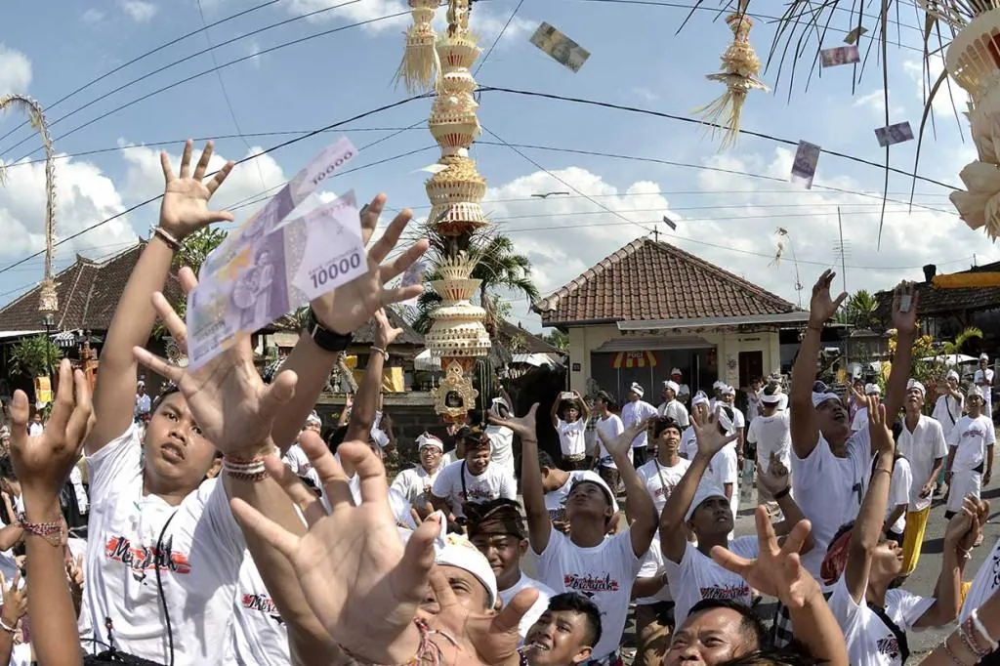
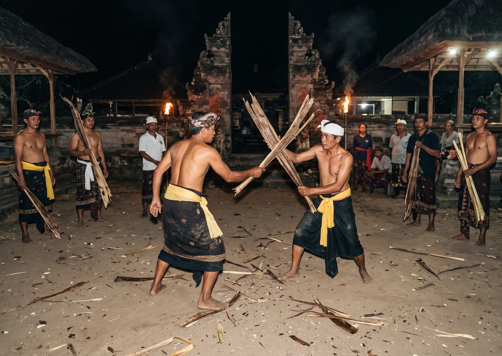
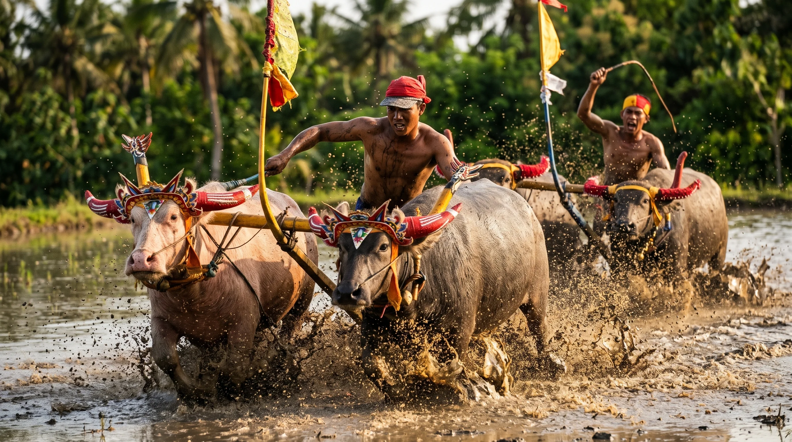
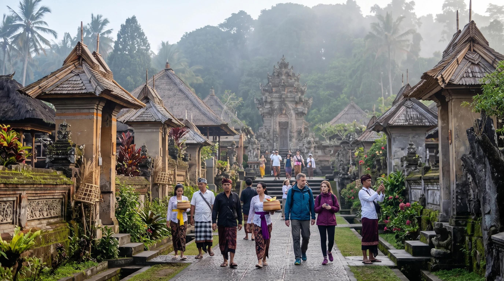
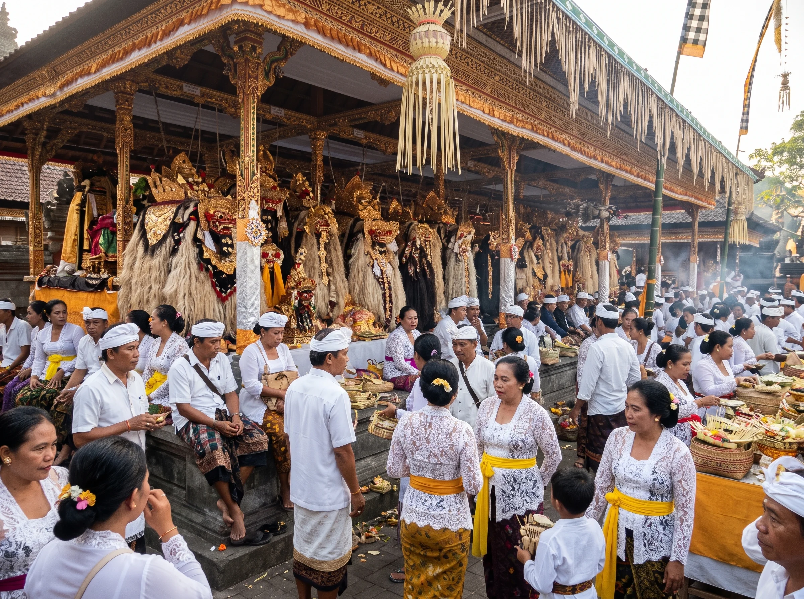
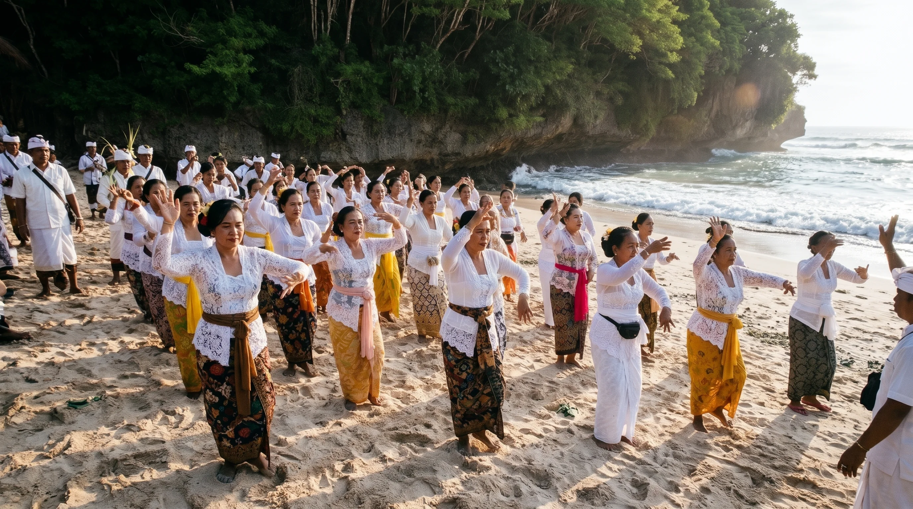
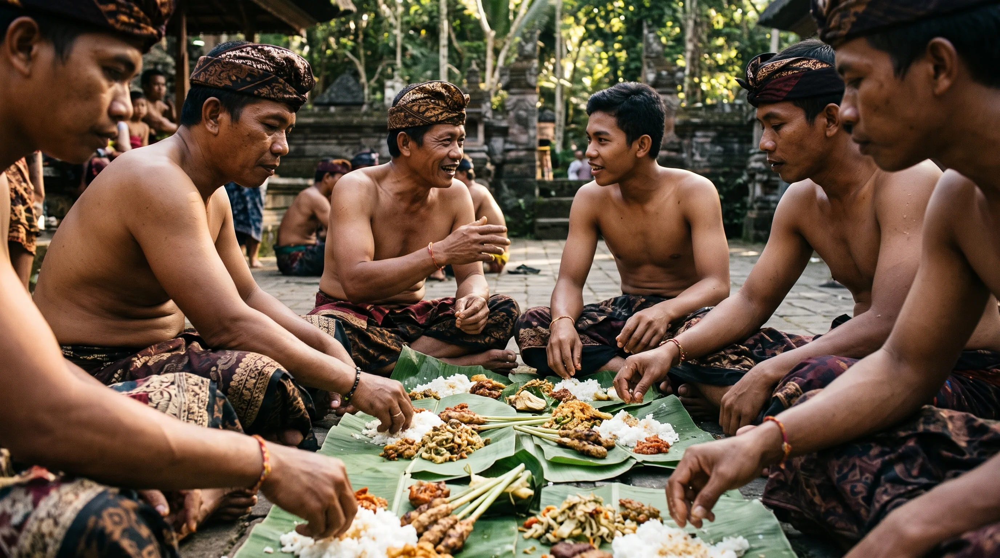

Budaya dan Tradisi Bali
302Memahami Kekayaan Budaya Dan Tradisi Suku Bali Di Pulau Dewata
Mengenal lebih dekat kekayaan adat tradisi yang menjadi identitas masyarakat Bali dari generasi ke generasi.
Baca ArtikelBudaya dan Tradisi Bali
302Mengenal lebih dekat kekayaan adat tradisi yang menjadi identitas masyarakat Bali dari generasi ke generasi.
Baca ArtikelTradisi di Sesetan, Denpasar, yang digelar setelah Nyepi ini menjadi simbol kerukunan dan upaya menjaga kebersamaan generasi muda.

Dilaksanakan masyarakat Desa Bongan, Tabanan, saat Kuningan. Tradisi ini diwarnai sorak-sorai dan kegiatan melempar uang yang memiliki makna adat.

Tradisi di Desa Pengotan ini menggunakan pelepah daun pisang dalam ritual adat yang berkaitan dengan penghormatan kepada leluhur dan kebersamaan warga.

Makepung merupakan tradisi balap kerbau khas Jembrana yang tumbuh dari kehidupan agraris dan menjadi kebanggaan masyarakat setempat.

Bali memiliki kekayaan budaya dan tradisi, yang diwariskan secara turun-temurun. Dengan nilai spiritual serta filosofi Tri Hita Karana, masyarakat senantiasa menjaga keharmonisan antar makhluk hidup

Tradisi Patangkilan Barong merupakan warisan budaya Bali yang mengandung nilai spiritual, kebersamaan, dan pelestarian seni Barong sebagai identitas budaya masyarakat Singapadu, Gianyar.

tradisi yang berkaitan dengan ritual memohon hujan. Tradisi ini mencerminkan kepercayaan spiritual masyarakat serta upaya menjaga dan melestarikan warisan budaya Bali.

Megibung adalah tradisi makan bersama khas Karangasem yang melambangkan kebersamaan, kesetaraan, dan persaudaraan.